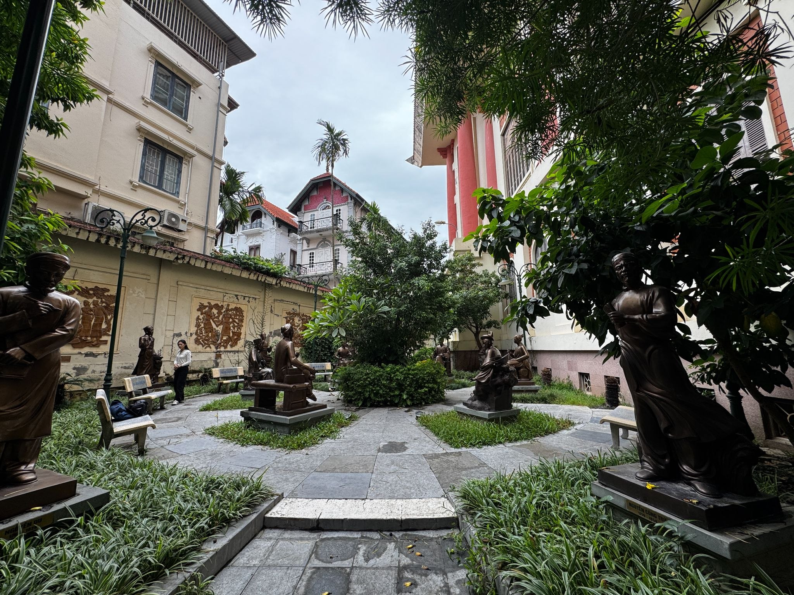
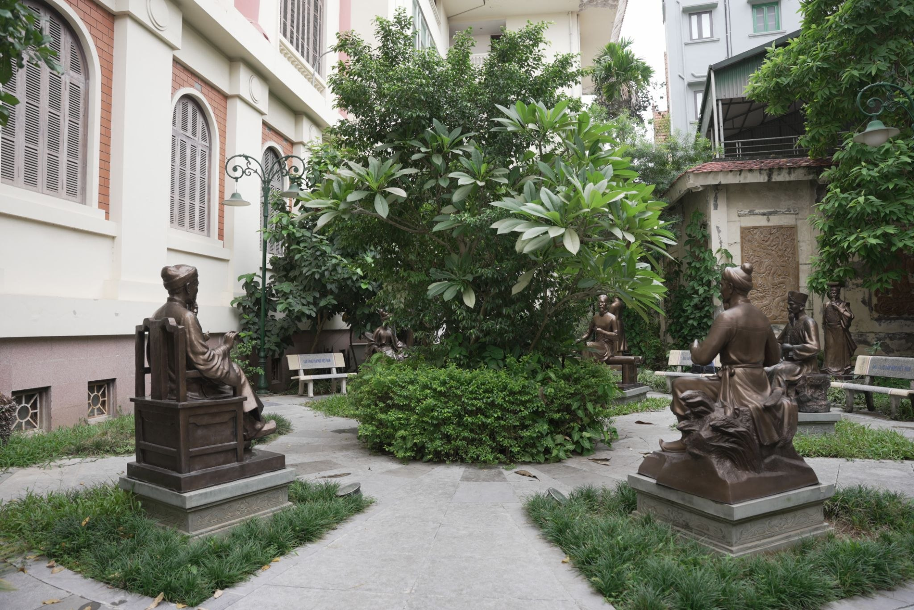
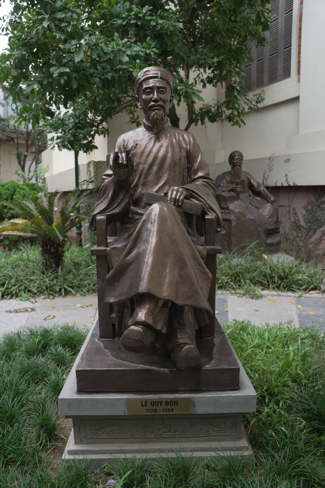
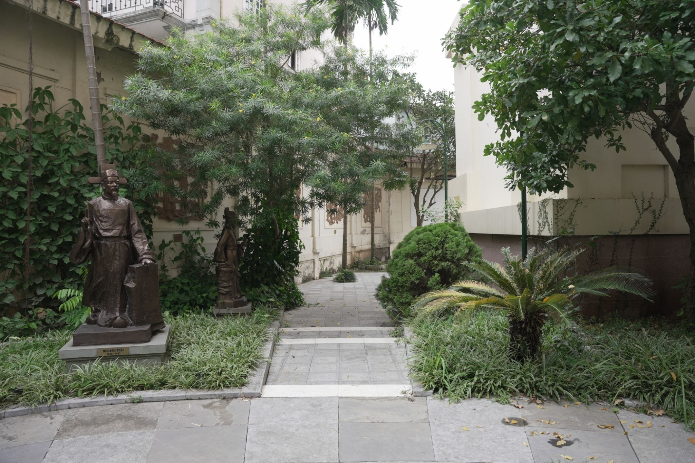

Trong bài
Giữa không gian xanh của bảo tàng, những pho tượng danh nhân văn học hiện diện như những người kể chuyện không lời. Mỗi gương mặt, dáng đứng và chi tiết tạo hình đều gợi nhắc về một con người, một thời đại và những đóng góp đã làm nên diện mạo văn chương Việt.
Danh nhân giữa khu vườn – một cách kể chuyện bằng hình ảnh
Trong hình dung quen thuộc, bảo tàng thường gắn với những phòng trưng bày, tủ kính, bản thảo và hiện vật. Nhưng tại khuôn viên Bảo tàng Văn học Việt Nam, câu chuyện về văn chương còn được mở rộng ra ngoài không gian trong nhà. Giữa khu vườn, những pho tượng danh nhân văn học đứng lặng, tạo nên một không gian vừa gần gũi vừa giàu tính biểu tượng.

Không cần những trang sách hay lời thuyết minh dài, hình ảnh các nhân vật văn học được thể hiện bằng điêu khắc đã tạo nên một cách tiếp cận khác với lịch sử văn chương. Người xem có thể bước giữa những pho tượng, quan sát từng gương mặt, dáng ngồi, trang phục và hình khối để hình dung về những con người từng để lại dấu ấn trong đời sống tinh thần của dân tộc.
Sự hiện diện của tượng văn học trong khu vườn cũng khiến không gian bảo tàng trở nên sinh động hơn. Những nhân vật vốn chỉ xuất hiện qua sách vở nay có hình hài cụ thể, trở thành một phần của cảnh quan mà người tham quan có thể trực tiếp quan sát.
Đó cũng là một cách đưa văn chương đến gần công chúng. Thay vì chỉ đọc về một danh nhân, người xem có thể bắt đầu bằng việc nhìn thấy họ. Từ hình ảnh ấy, câu hỏi về cuộc đời, tác phẩm và thời đại của nhân vật có thể trở thành điểm khởi đầu cho một hành trình khám phá sâu hơn.
Danh nhân văn học và những gương mặt được lưu giữ
Lịch sử văn học Việt Nam là một dòng chảy dài với nhiều thế hệ tác giả, từ những người đặt nền móng cho văn học dân tộc đến những cây bút có ảnh hưởng trong các giai đoạn hiện đại. Việc đưa hình ảnh các danh nhân vào khuôn viên bảo tàng vì thế không đơn thuần nhằm tạo điểm nhấn cảnh quan.

Mỗi pho tượng là một cách ghi dấu một con người trong ký ức văn hóa. Đó có thể là những tác giả có đóng góp lớn cho văn học, những nhân vật gắn với các giai đoạn quan trọng hoặc những tên tuổi đã trở thành một phần quen thuộc trong đời sống đọc của nhiều thế hệ.
Khi đứng giữa khu vườn, các nhân vật ấy không còn bị giới hạn bởi những trang sách. Khoảng không gian mở khiến họ được đặt trong một mối quan hệ khác với người xem. Một nhà văn có thể được nhìn từ nhiều góc độ, không chỉ qua tác phẩm mà còn qua biểu tượng về con người và thời đại mà pho tượng gợi lên.
Từ tên tuổi đến câu chuyện
Một trong những giá trị của không gian tượng là khả năng kích thích sự tò mò. Một người trẻ có thể chưa từng đọc tác phẩm của một danh nhân, nhưng khi bắt gặp một gương mặt hay một pho tượng giữa khu vườn, họ có thể muốn biết nhân vật đó là ai.
Từ câu hỏi đơn giản ấy, câu chuyện có thể mở rộng: Người này đã sống trong thời kỳ nào? Họ đã viết những gì? Điều gì khiến tác phẩm của họ được lưu giữ? Những trang viết ấy phản ánh xã hội và con người Việt Nam ra sao?
Đây chính là điểm giao giữa hình ảnh và văn chương. Tượng văn học không thể thay thế tác phẩm, nhưng có thể trở thành cánh cửa dẫn người xem đến với tác phẩm.
Với bảo tàng, việc tạo ra những điểm kết nối như vậy đặc biệt quan trọng. Bởi giá trị của một không gian văn học không chỉ nằm ở việc bảo quản hiện vật mà còn ở khả năng khơi dậy nhu cầu tìm hiểu, đọc và đối thoại của công chúng.
Khi người trẻ gặp những gương mặt trong sách
Với thế hệ trẻ, một trong những thách thức của việc tiếp cận văn học là khoảng cách giữa tác phẩm và trải nghiệm đời sống. Những tác giả của nhiều thế kỷ trước hoặc những giai đoạn lịch sử xa xôi đôi khi chỉ còn được biết đến qua tên tuổi và tác phẩm trong sách.

Không gian tượng có thể rút ngắn khoảng cách ấy bằng trải nghiệm trực quan. Một danh nhân không còn chỉ là cái tên trong bài học mà xuất hiện trước mắt người xem dưới một hình hài cụ thể.
Điều này đặc biệt phù hợp với cách tiếp nhận thông tin của công chúng hiện nay, khi hình ảnh ngày càng đóng vai trò quan trọng trong việc thu hút sự chú ý. Một pho tượng có thể trở thành điểm chụp ảnh, nhưng nếu được kết nối với câu chuyện về nhân vật, nó còn có thể trở thành điểm bắt đầu cho việc tìm hiểu văn chương.
Từ một bức ảnh, người trẻ có thể tìm kiếm tên tác giả. Từ tên tác giả, họ tìm đến tác phẩm. Và từ tác phẩm, họ có thể tiếp tục khám phá cả một giai đoạn lịch sử.
Một khu vườn, nhiều thế hệ văn chương
Nhìn rộng hơn, khu vườn không chỉ là một phần cảnh quan của bảo tàng. Đây còn là nơi cho thấy cách văn học Việt Nam được ghi nhớ bằng nhiều hình thức khác nhau.

Sách lưu giữ câu chữ. Bản thảo lưu giữ dấu vết sáng tác. Hiện vật lưu giữ ký ức về con người. Còn tượng lưu giữ hình ảnh. Khi những hình thức ấy cùng xuất hiện, câu chuyện văn chương trở nên nhiều chiều hơn.
Điều đó cũng cho thấy việc bảo tồn di sản văn học không chỉ là giữ lại những tác phẩm đã được công nhận. Đó còn là tạo ra những không gian để công chúng có thể gặp gỡ, ghi nhớ và tiếp tục kể lại câu chuyện về những người đã làm nên nền văn chương dân tộc.
Từ những pho tượng giữa khu vườn, người xem có thể bước vào những câu chuyện lớn hơn về tác giả, tác phẩm, lịch sử và văn hóa. Một cuộc dạo bước vì thế có thể trở thành một hành trình khám phá văn học.
Và có lẽ đó cũng là điều thú vị nhất ở những danh nhân đứng giữa khu vườn: họ không cần lên tiếng, nhưng sự hiện diện của họ đủ để gợi ra những câu chuyện vẫn còn được đọc, được nhớ và được tiếp nối.
Giữa khu vườn bảo tàng, những danh nhân văn học không chỉ là những pho tượng mà còn là những điểm kết nối giữa con người hôm nay với lịch sử văn học Việt Nam. Qua không gian ấy, những tên tuổi, tác phẩm và di sản văn học được tiếp cận bằng một hình thức trực quan, gần gũi hơn, để mỗi bước chân trong khu vườn có thể mở ra một câu chuyện mới về văn chương.
Bảo tàng Văn học Việt Nam